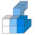

Download NodeBox
Download NodeBoxNodeBox is a Mac OS X application that lets you create 2D visuals (static, animated or interactive) using Python programming code and export them as a PDF, an image or a Quicktime movie. NodeBox is free and well-documented.
 | Download NodeBox for Mac OS X (version 1.9.5) Mac OS X Lion (10.7) and |

| Designed for Mac OS X NodeBox is designed for Mac OS X 10.4 (Tiger) and 10.5 (Leopard). It comes as a Universal Binary that works on both PowerPC and Intel. | |
 | Open Source NodeBox is free open-source software and the source code is available. Developers can extend NodeBox or improve it. |
| Python Powered In NodeBox, you design with programming code, with language. NodeBox uses Python programming code which is easy to understand even for non-programmers. | |
| Illustrator Import NodeBox integrates effortlessly with various document formats. In NodeBox, you can include your vector images from Adobe Illustrator. And with the additional support of the SVG library you can manipulate each curve individually in NodeBox. | |
| Core Image support Install the NodeBox Core Image library to create layered images. and then apply transformations, blend modes, alpha masks and filters to indivdual layers. | |
| PDF Export The visual output you create in NodeBox exports to a PDF-document. You can automatically export multiple PDF-documents from the same script, and control the layout of each page individually. | |
| QuickTime Export Aside from PDF-documents you can create animation in NodeBox as well. Animations can be exported as QuickTime movies that can be displayed on web pages. | |
|  | Documentation NodeBox comes well documented: |
Previous versions
For older versions (including 1.0rc7 which works on Mac OS X 10.3), check here.
Documentation
Offline documentation in HTML format can be downloaded here (currently outdated).
Source code
The source code can be found on GitHub